El jugador del Real Madrid Michel Salgado reconoció la diferencia que ayer hubo entre el Deportivo de La Coruña y su equipo , afirmando que los gallegos consiguieron " un resultado justo " y que , tras conseguir el tercer gol , les " pasaron por encima ".
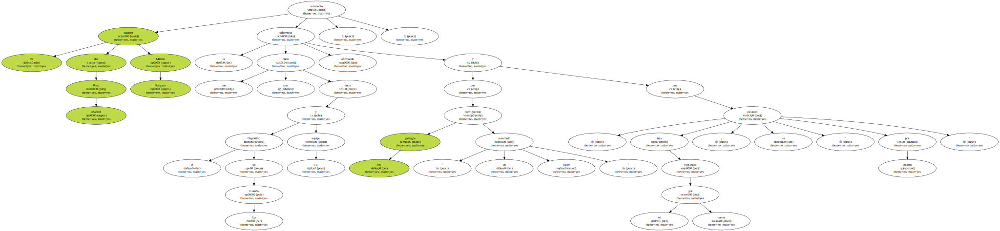" Viene bien que no haya posibilidad de descanso y que tengamos tantos partidos seguidos . Estamos deseando que llegue el partido de Copa contra el Mérida para olvidarnos definitivamente de Coruña . Lo único que podemos hacer es trabajar más fuerte , no hay otro remedio posible para esto " , declaró Michel Salgado.
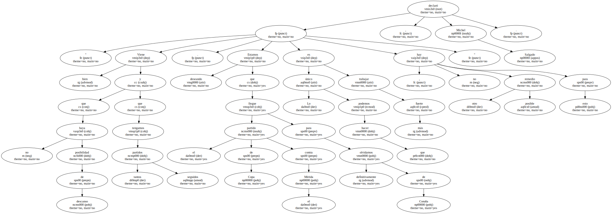El jugador gallego está seguro de que la derrota no tendrá consecuencias negativas para el equipo.

" Es difícil dormir cuando has jugado un partido en el que nada salió bien . Se ha cortado una excelente racha positiva , pero alguna vez tenía que llegar . Teníamos mucha ilusión en derrotar al líder y somos conscientes de que hemos perdido una gran oportunidad " , dijo Michel.
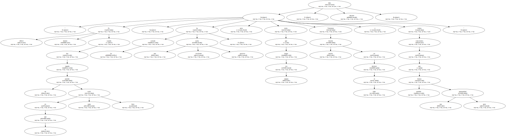" Queda mucha Liga y el equipo no se va a venir abajo . Hubo diferencia entre los dos equipos y por eso nos metieron cinco goles . Con el 2-1 tuvimos nuestras posibilidades , pero no las aprovechamos " , añadió el lateral derecho.
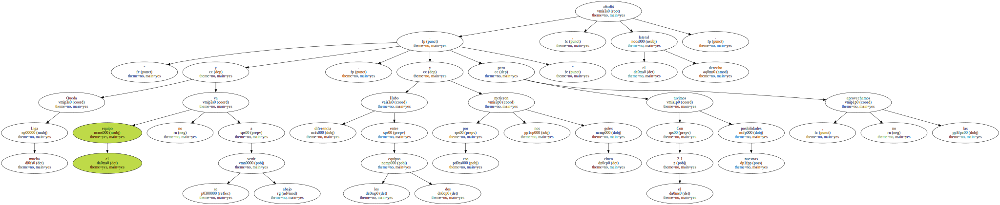La clave fue el tercero , que nos marcaron nada más comenzar la segunda parte.
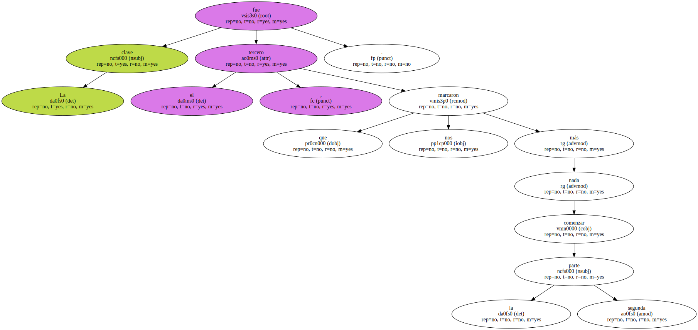El jugador no sabía que Riazor se le diera tan mal al Real Madrid.
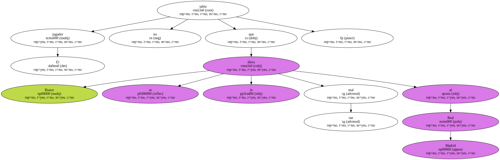" En serio , no sabía que Riazor fuera un ' campo maldito ' para el Madrid . No se habló antes del partido en el vestuario , pero la sombra se ha alargado un año más " , significó.
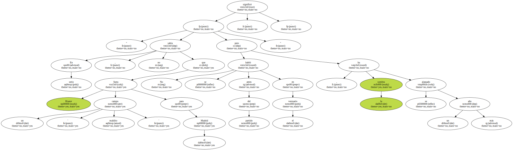Michel Salgado no descarta al Depor en la lucha por el título de Liga.
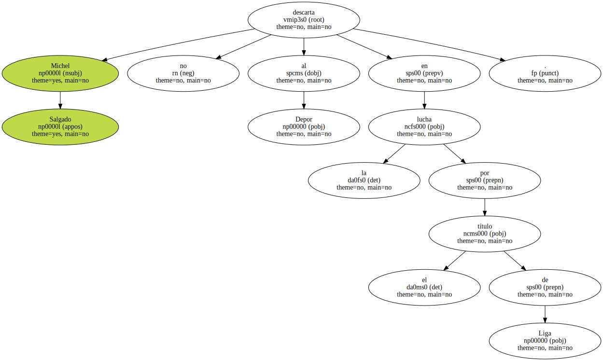" Es muy fácil decir las cosas cuando pasan . Antes el Depor iba a ser campeón casi de calle y hace dos días todos le dejaban fuera . Luego ya veremos quien gana " , indicó.
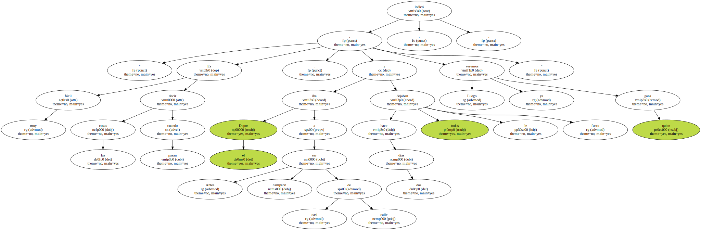El Depor es un gran equipo y tiene tantas posibilidades como cualquiera , ahora más que nadie porque es el líder.
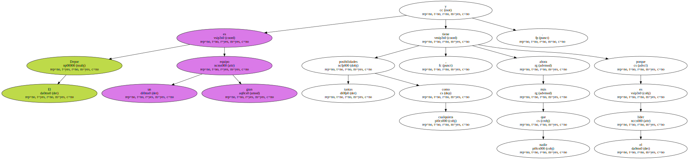Las bandas fueron la cara del Deportivo y la cruz del Real Madrid.
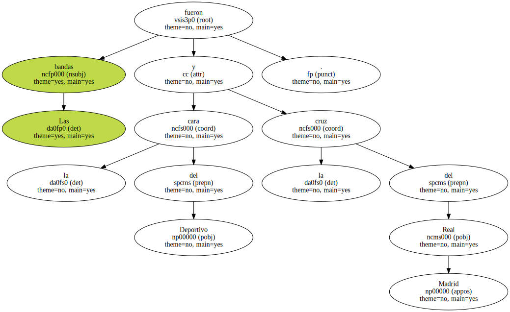" No hemos estado frescos , ni acertados , ni ordenados . Nos falló todo y también la presión . Por eso el Depor fue siempre superior en banda donde tenían dos jugadores , mientras que nosotros sólo teníamos uno " , subrayó el lateral.
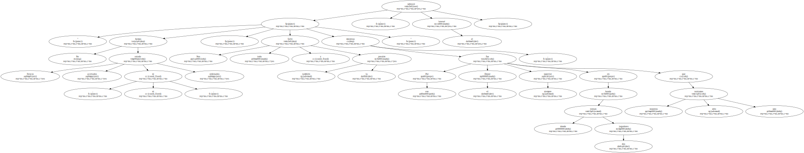" Cuando no salen bien las cosas es cuando se echan en falta hombres en banda . Guti y Sanchis lo intentaron , pero su tendencia natural es irse al centro porque no están cómodos pegados a la cal " , finalizó Michel Salgado.
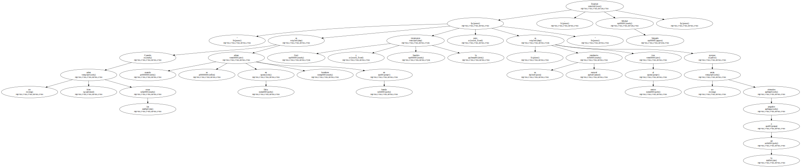